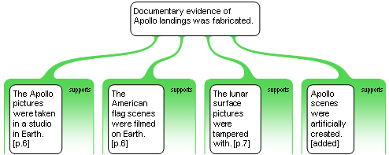

Take the argument map from the model answer to Exercise 6.1 and improve it by applying the first (ME) part of the MECE rule.
Applying the ME part of the MECE rule results in a slightly reduced tree:
Whereas there were four reasons in one group at the second level, two of them were basically the same point so have been consolidated. The other groups already were ME.
This is the argument map, with all groups marked:

The MECE rule applies to groups of considerations, so lets consider the groups one by one.
Are these objections all completely distinct from each other? Are any two of them just variants on each other, or perhaps support for a more general objection?
In this case, they are in fact genuinely distinct from each other. There is no sensible way to reduce the set without losing something.
The ME (mutually exclusive) part of the MECE rule is concerned with the overlap between considerations within a group, so we can set Group 2 aside (for the while at least).
Things start to get interesting here, so lets have a look at this group on its own:

There is obvious similarity among these reasons. Of course they must be somewhat similar, because they are all evidence for the same claim. However there seems to be a bit of redundancy in the expression of the evidence.
There are really three key ideas:
Scenes were artificially created
The photos and video footage were taken on earth
Photos were manipulated
These three points are genuinely distinct from each other. Comparing these with the four reasons, it becomes apparent that the first two are really too close to each other to be worth mapping separately. A better argument map is:

This is now a simpler, more clear MECE set of considerations.
You might think that in reducing the set of considerations we have lost something. In particular, there is no longer any mention of the American flag. What happened to that?
The answer is that the American flag evidence should appear at a lower level, as a reason to think that the pictures and footage were created on Earth.
The considerations in this group are in fact distinct from each other; each one makes a different point.
The first two are both concerned with dust, and you might consider whether they should both be subordinate (beneath) a slightly more general reason, something like: The Apollo landing did not create the expected impacts on the lunar dust.
Applying the ME part of the MECE rule, we can reduce Group 3.